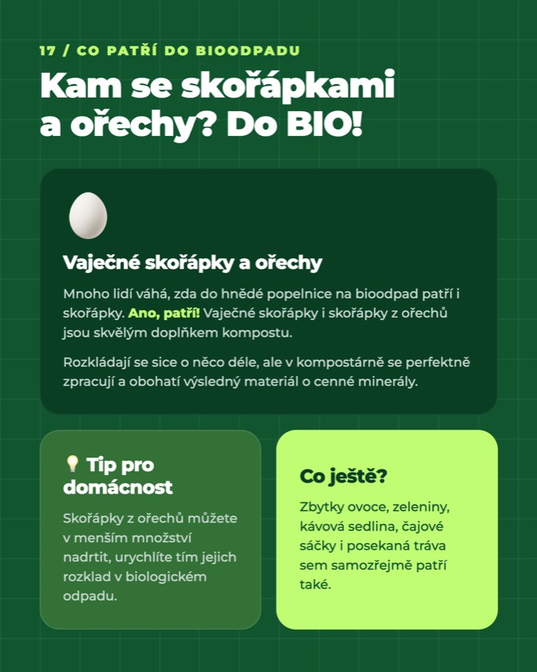
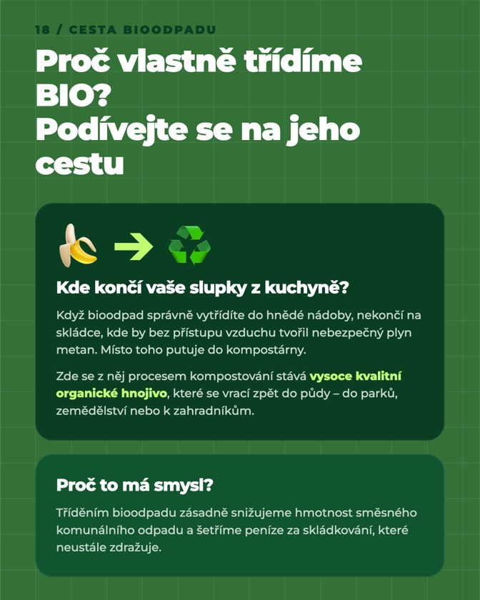
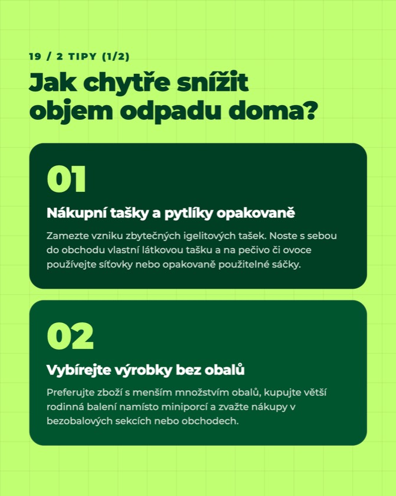
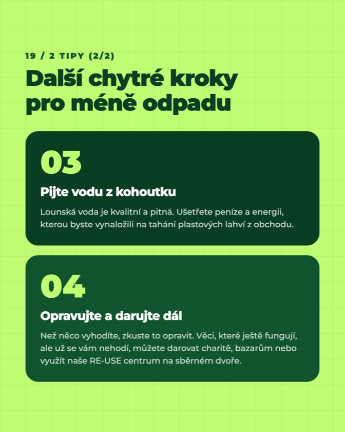
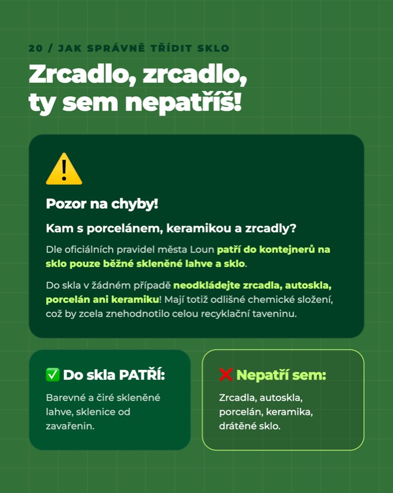
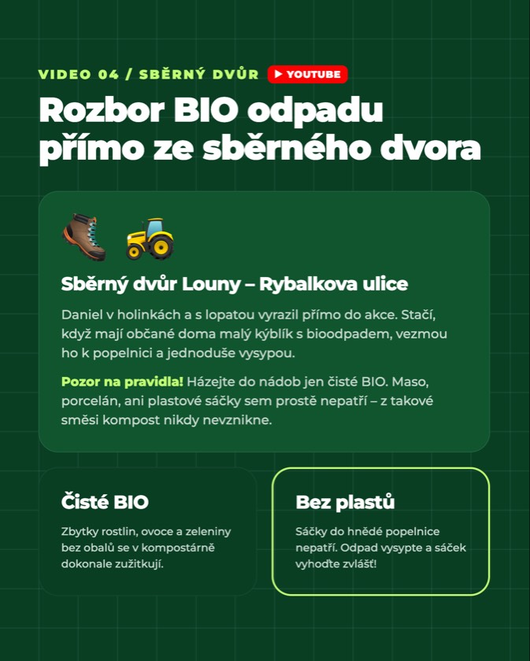
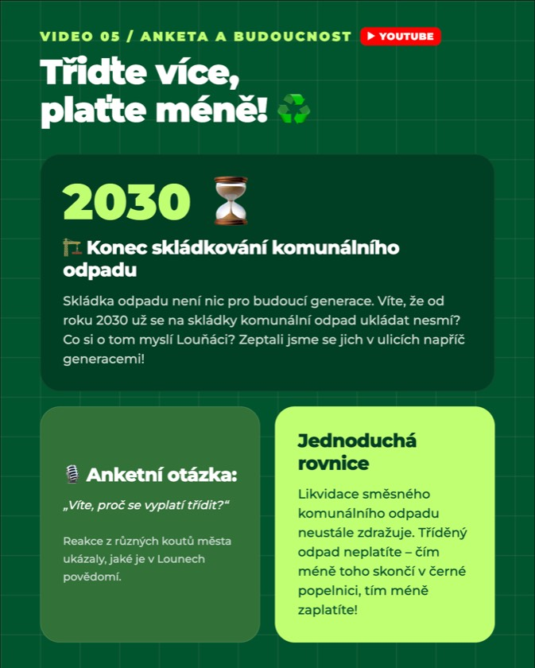
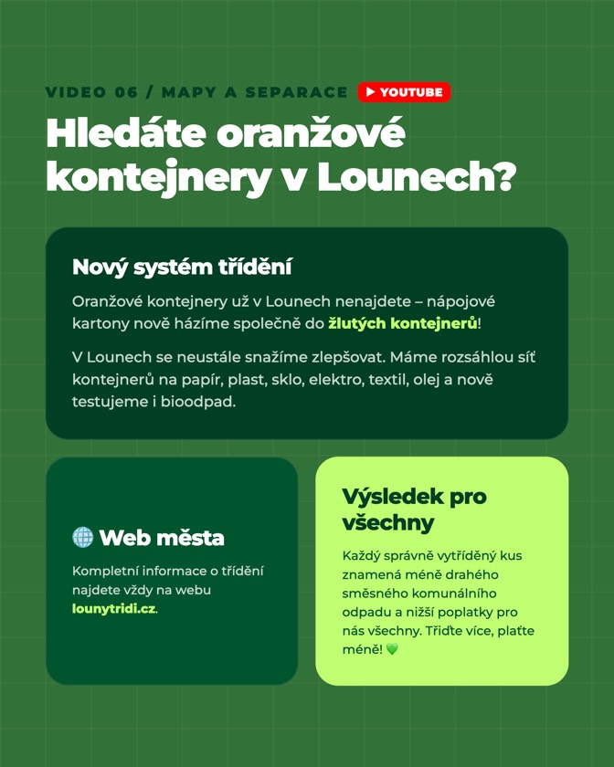
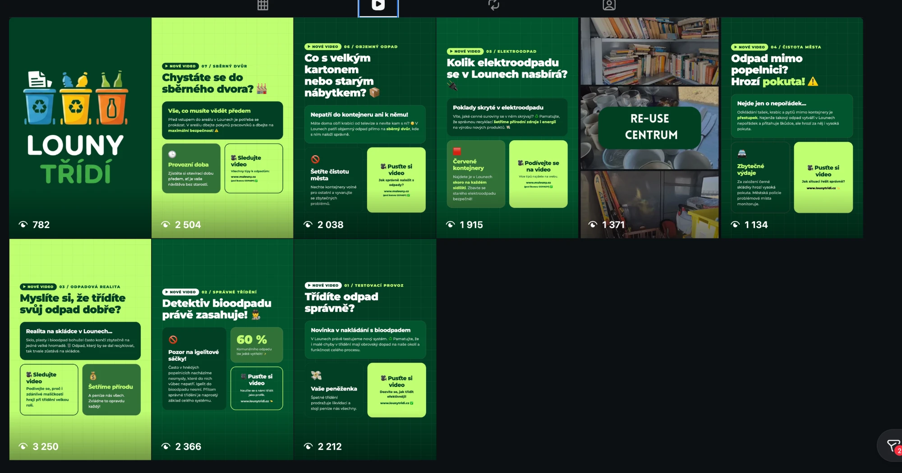

Grafika a příspěvky
Jak příspěvky vypadají
Jednotný vizuální styl pro příspěvky, covery a bannery. Posuňte do strany, kliknutím zvětšíte.










Pro město Louny jsme natočili a vystříhali sérii videí, která učí lidi třídit odpad, hlavně bioodpad. Jedno z nich oslovilo odhadem 46 % obyvatel města.
zhlédnutí videa „Chystáte se do sběrného dvora?“ napříč sítěmi
obyvatel Loun osloveno (odhad Oživto s ohledem na relevanci publika)
zhlédnutí 9 reelů na Instagramu dohromady
médií a webů, které o projektu psaly (ČTK, Metro, Barrandov TV…)
Město Louny spustilo projekt Louny třídí s jasným cílem: vzdělávat obyvatele a zvýšit efektivitu třídění odpadu. Ukázat, že třídění není složité a může šetřit peníze. Z toho vznikla jednoduchá hláška: Třiďte více, plaťte méně.
Podle analýzy komunálního odpadu lze v Lounech ještě zhruba 60 % odpadu vytřídit a bioodpad tvoří téměř 16 % objemu komunálního odpadu. Od konce dubna 2026 navíc běží pilotní sběr bioodpadu na sídlišti Kpt. Nálepky.
Praktická rada „Chystáte se do sběrného dvora?“ zabalená do příběhu. S kabrioletem plným kartonu jedeme na sběrný dvůr a ukazujeme, co si vzít s sebou, třeba doklad o trvalém bydlišti. Žádná přednáška, jen krátký, zapamatovatelný příběh.
Krátké, hravé a vždy s jedním konkrétním tipem, jak správně třídit.
70 tun elektroodpadu a v něm cenné suroviny.
Nepatří do kontejneru, patří na sběrný dvůr.
Daniel v holínkách rozebírá bioodpad přímo na místě.
Anketa mezi lidmi v ulicích Loun a konec skládkování.
Nový systém třídění a mapa kontejnerů ve městě.
Video na YouTube kanálu města Louny
Jednotný vizuální styl pro příspěvky, covery a bannery. Posuňte do strany, kliknutím zvětšíte.








Přehled všech reelů na profilu @lounytridi. Zdrojem je přehled reelů přímo na profilu (instagram.com/lounytridi/reels).

| # | Reel | Téma | Zhlédnutí |
|---|---|---|---|
| — | Úvodní reel | Louny třídí | 782 |
| 01 | Testovací provoz: Třiďte odpad správně? | Nová novinka s bioodpadem | 2 212 |
| 02 | Detektiv bioodpadu právě zasahuje! | Správné třídění | 2 366 |
| 03 | Myslíte si, že třídíte svůj odpad dobře? | Odpadová realita | 3 250 |
| 04 | Odpad mimo popelnici? Hrozí pokuta! | Čistota města | 1 134 |
| 05 | Kolik elektroodpadu se v Lounech nasbírá? | Elektroodpad | 1 915 |
| 06 | Co s velkým kartonem nebo starým nábytkem? | Objemný odpad | 2 038 |
| 07 | Chystáte se do sběrného dvora? | Sběrný dvůr | 2 504 |
| — | RE-USE centrum | Opětovné využití | 1 371 |
| Celkem za 9 reelů | 17 572 | ||
Tisková zpráva o spuštění profilů Louny třídí vyšla v 20 médiích a na webech, včetně ČTK a Metra.
Videoprojekt vznikl pod záštitou města Louny.
Natočíme obsah, který lidi baví a něco je naučí. Stačí nezávazný hovor.
Domluvit nezávazný hovor